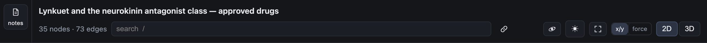
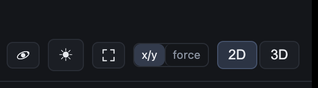
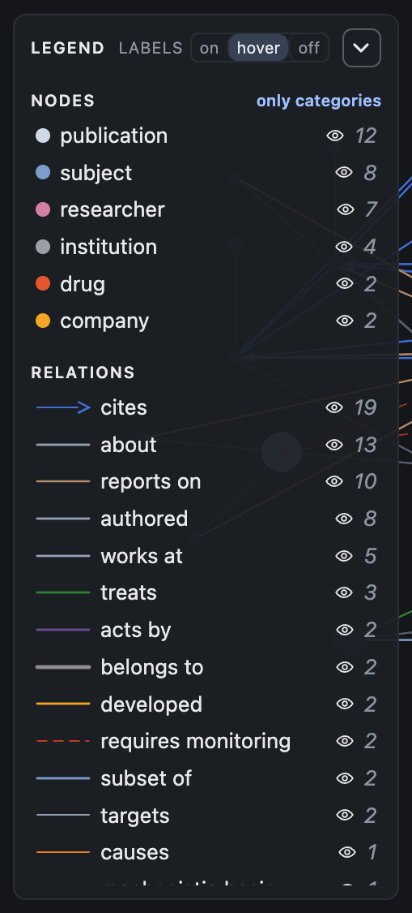
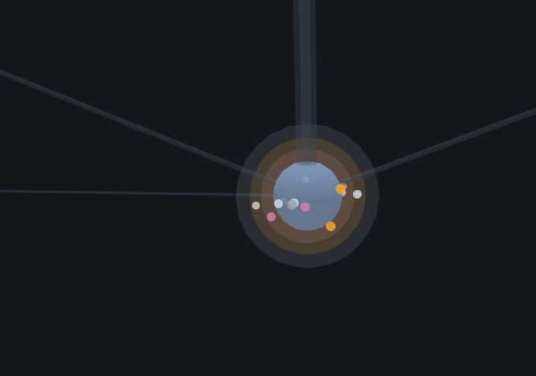
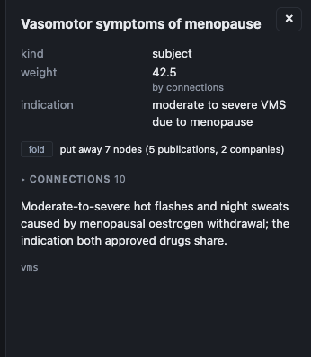

One document, one page, and what every control does
A rendered graph is a file, not a service: everything below works with the page
open from disk or over a URL. This is a walk through the actual page — the same one the case
page embeds — so read a section, then try it.
Where things are: the bar across the top, the legend on the left, the canvas in
the middle, the panel on the right. The numbered sections below follow that order.
1The top bar
Two rows: the document names itself, then its controls. The count, the search
box and notes sit on the left — the search takes whatever room is left — and every switch
sits on the right.


The real bar — count · search · notes on the left, every switch on the right, and
the switches again at twice the size.
title · nodes · edges — what the document is, and how big it is.
search
— two or more characters, matched against label, id and kind. Up to eight hits; picking one
selects that node, unfolds it if it was folded away, and puts it in the middle.
rings
— draws what a node is hiding inside it as a cloud of small bodies around it, one colour
per kind, turning on their own orbit. This is the switch that makes a folded map legible.
notes
— opens the Markdown notes that travel with the graph, inside the page.
☀ / ☾ — light or dark. A device preference, remembered in this browser.
fit
— frame the whole graph again after you have dragged it off-screen.
this page — the chain icon beside notes is a link to the page's own
address. A self-contained file still knows where it lives: click it to open the same map in
a tab of its own, or use it to get back after closing the one you had.
x/y · force — where positions come from: the coordinates the document carries, or a
layout computed from the edges. It governs 2D and 3D alike; a graph with no coordinates
shows x/y greyed out. The document may declare a default
(meta.layout); this switch overrules it for the reading.
2D / 3D — the same document, drawn flat or in space. With x/y the 3D
view holds every node where the document put it; depth comes from level when
the document has one, and from weight — scaled to the width of the picture —
when it does not. The two views are one map from two angles.
2The legend
Left column. The chevron button in its header — ▾ while the legend is open —
folds it into one line, where the same button points ▸ and opens it again:
▸ NODES 35 · EDGES 73 · labels.

Kinds first, then relations — every relation row draws a real line of that
relation: its colour, its dashes, its head, its width.
labels on / hover / off — names always, names on hover only, or no names. Default is
hover: on a packed map, names at rest overlap each other and hide the picture they explain.
A document can ask for on.
nodes, by kind — every kind with its count and an eye. The eye removes that kind
from the drawing; anything folded under it is promoted to the top layer rather than
vanishing with it.
only categories — folds the whole map until only the top-level kinds remain; the
button then reads all nodes and brings everything back. The fold is a way of reading,
not a lock: click one category and its panel offers unfold — bring back N nodes,
which opens that branch one layer while the rest of the map stays folded.
relations — each relation word with a sample of the real line. The eye hides that
relation; the count is how many edges of it the document carries.
3The canvas
The middle. Nothing here is a menu; everything responds to the pointer.
hover a node — its name appears beside it (2D) or above it (3D).
click a node — selects it, opens the right-hand panel and, in 3D, flies to it.
drag — pan. scroll — zoom. In 3D: left drag orbits, right drag pans,
wheel zooms.
click empty space — closes the panel.
4Folding — the point of the whole thing
Select a node; the controls appear in the right-hand panel.
A map of two thousand papers is unreadable at once, and a static summary throws
the papers away. Folding keeps both: a node absorbs what sits below it, and says how much it is
holding.

Five nodes instead of thirty-five, in 3D, with rings on. The clouds are the kinds
that were folded in; the small bodies circle inside them. This is the view worth opening.
To see it in ten seconds
Press only categories in the legend — the whole map folds to its kinds
(35 nodes → 5 on this graph).
Press 3D, then fit if the picture is off-screen.
Click one of the remaining nodes: the camera flies to it, and the clouds around it are the
publications and researchers that went inside.
To do it by hand instead: click any node with something below it — its panel says
fold · put away N nodes — and press fold. One layer per press; press
again for the layer below that.
fold — puts away one layer below the selected node, and the row says what it
is about to move (put away 7 nodes (5 publications, 2 companies)). There is no
button when there is nothing below.
unfold — brings back exactly what was folded here, one layer per press. It appears
only when something is actually folded.
what a fold does to edges — a connection that ran through the folded node becomes a
connection between the nodes on either side, at half power. Nothing is invented: a
relation between two nodes that were never connected does not appear.
a node that is holding something wears a ring whose thickness is the mass inside;
with rings on, the contents are drawn as the cloud above.
clicking a folded node tells you what is inside it, by kind and count — a folded
map that does not say what it hides is lying about the map.
5The node panel
Right column, after a click.

A subject node: its own fields, the fold row, and connections folded shut.
props — the fields the document actually carries: description, link, weight, size…
Bookkeeping fields are kept out of the way.
connections — folded shut by default, with a ▸ that turns ▾ when it
opens. Open it for the neighbours grouped by
relation; each one is a link that puts that node in the middle.
cited / cites — for a publication: how often it is cited in total (and by which
source), how many of those citing works are in this map, and the same count the other
way. The total is stored; the here number is computed from the edges drawn.
read the note — if that node has a Markdown note beside the graph, open it without
leaving the page.
6Notes, and handing the page over
Top bar → notes.
The article that was written with the graph, rendered in place. copy and
download give you the Markdown; hand it to the agent puts the path back in
the conversation that made it.
The page is one file: the whole document is inlined, so it opens over file://
with no server and no network. Send the HTML, or send the JSON and re-render.
7When a document asks for more than a page can draw
A banner appears above the canvas; nothing is deleted.
The banner says what the document asks for and what is being drawn
(1,200 nodes · 8,000 edges — this graph asks for 1,200 / 8,000).
The page starts with the smallest clusters collapsed, each carrying a ring.
draw everything takes two clicks — the first one says what it is about to do.
Two things this page deliberately does not do: it never edits the document
(folding is a way of reading, not a change to the file), and it never talks to a server — so a
page you saved last year still opens, whatever has happened since.